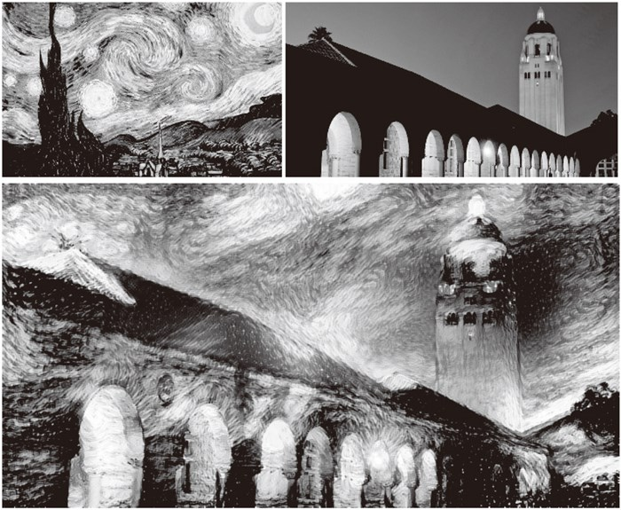
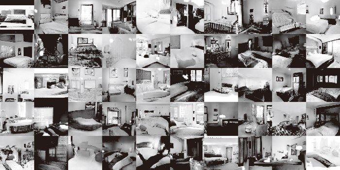
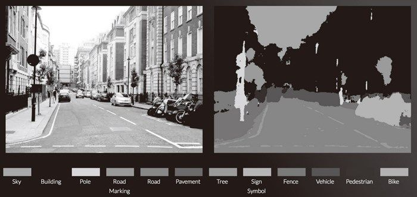
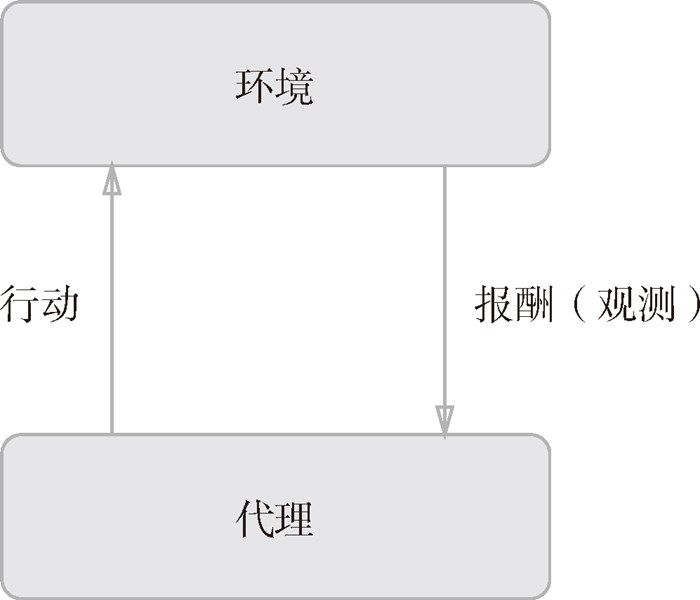
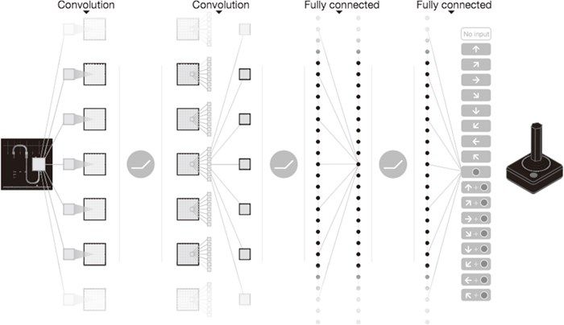

8.5 深度学习的未来
深度学习已经不再局限于以往的领域，开始逐渐应用于各个领域。本节将介绍几个揭示了深度学习的可能性和未来的研究。
8.5.1 图像风格变换
有一项研究是使用深度学习来“绘制”带有艺术气息的画。如图 8-23 所示，输入两个图像后，会生成一个新的图像。两个输入图像中，一个称为“内容图像”，另一个称为“风格图像”。
如图 8-23 所示，如果指定将梵高的绘画风格应用于内容图像，深度学习就会按照指示绘制出新的画作。此项研究出自论文“A Neural Algorithm of Artistic Style”[39]，一经发表就受到全世界的广泛关注。

图 8-23 基于论文“A Neural Algorithm of Artistic Style”的图像风格变换的例子：左上角是风格图像，右上角是内容图像，下面的图像是新生成的图像（图像引用自文献[40]）
这里我们不会介绍这项研究的详细内容，只是叙述一下这个技术的大致框架，即刚才的方法是在学习过程中使网络的中间数据近似内容图像的中间数据。这样一来，就可以使输入图像近似内容图像的形状。此外，为了从风格图像中吸收风格，导入了风格矩阵的概念。通过在学习过程中减小风格矩阵的偏差，就可以使输入图像接近梵高的风格。
8.5.2 图像的生成
刚才的图像风格变换的例子在生成新的图像时输入了两个图像。不同于这种研究，现在有一种研究是生成新的图像时不需要任何图像（虽然需要事先使用大量的图像进行学习，但在“画”新图像时不需要任何图像）。比如，基于深度学习，可以实现从零生成“卧室”的图像。图 8-24 中展示的图像是基于 DCGAN（Deep Convolutional Generative Adversarial Network）[41] 方法生成的卧室图像的例子。

图 8-24 基于 DCGAN 生成的新的卧室图像（引用自文献 [41]）
图 8-24 的图像可能看上去像是真的照片，但其实这些图像都是基于 DCGAN 新生成的图像。也就是说，DCGAN 生成的图像是谁都没有见过的图像（学习数据中没有的图像），是从零生成的新图像。
能画出以假乱真的图像的 DCGAN 会将图像的生成过程模型化。使用大量图像（比如，印有卧室的大量图像）训练这个模型，学习结束后，使用这个模型，就可以生成新的图像。
DCGAN 中使用了深度学习，其技术要点是使用了 Generator（生成者）和 Discriminator（识别者）这两个神经网络。Generator 生成近似真品的图像，Discriminator 判别它是不是真图像（是 Generator 生成的图像还是实际拍摄的图像）。像这样，通过让两者以竞争的方式学习，Generator 会学习到更加精妙的图像作假技术，Discriminator 则会成长为能以更高精度辨别真假的鉴定师。两者互相切磋、共同成长，这是 GAN（Generative Adversarial Network）这个技术的有趣之处。在这样的切磋中成长起来的 Generator 最终会掌握画出足以以假乱真的图像的能力（或者说有这样的可能）。
 之前我们见到的机器学习问题都是被称为监督学习（supervised learning）的问题。这类问题就像手写数字识别一样，使用的是图像数据和教师标签成对给出的数据集。不过这里讨论的问题，并没有给出监督数据，只给了大量的图像（图像的集合），这样的问题称为无监督学习（unsupervised learning）。无监督学习虽然是很早之前就开始研究的领域（Deep Belief Network、Deep Boltzmann Machine 等很有名），但最近似乎并不是很活跃。今后，随着使用深度学习的 DCGAN 等方法受到关注，无监督学习有望得到进一步发展。
之前我们见到的机器学习问题都是被称为监督学习（supervised learning）的问题。这类问题就像手写数字识别一样，使用的是图像数据和教师标签成对给出的数据集。不过这里讨论的问题，并没有给出监督数据，只给了大量的图像（图像的集合），这样的问题称为无监督学习（unsupervised learning）。无监督学习虽然是很早之前就开始研究的领域（Deep Belief Network、Deep Boltzmann Machine 等很有名），但最近似乎并不是很活跃。今后，随着使用深度学习的 DCGAN 等方法受到关注，无监督学习有望得到进一步发展。
8.5.3 自动驾驶
计算机代替人类驾驶汽车的自动驾驶技术有望得到实现。除了汽车制造商之外，IT 企业、大学、研究机构等也都在为实现自动驾驶而进行着激烈的竞争。自动驾驶需要结合各种技术的力量来实现，比如决定行驶路线的路线计划（path plan）技术、照相机或激光等传感技术等，在这些技术中，正确识别周围环境的技术据说尤其重要。这是因为要正确识别时刻变化的环境、自由来往的车辆和行人是非常困难的。
如果可以在各种环境中稳健地正确识别行驶区域的话，实现自动驾驶可能也就没那么遥远了。最近，在识别周围环境的技术中，深度学习的力量备受期待。比如，基于 CNN 的神经网络 SegNet[42]，可以像图 8-25 那样高精度地识别行驶环境。
图 8-25 中对输入图像进行了分割（像素水平的判别）。观察结果可知，在某种程度上正确地识别了道路、建筑物、人行道、树木、车辆等。今后若能基于深度学习使这种技术进一步实现高精度化、高速化的话，自动驾驶的实用化可能也就没那么遥远了。

图 8-25 基于深度学习的图像分割的例子：道路、车辆、建筑物、人行道等被高精度地识别了出来（引用自文献 [43]）
8.5.4 Deep Q-Network（强化学习）
就像人类通过摸索试验来学习一样（比如骑自行车），让计算机也在摸索试验的过程中自主学习，这称为强化学习（reinforcement learning）。强化学习和有“教师”在身边教的“监督学习”有所不同。
强化学习的基本框架是，代理（Agent）根据环境选择行动，然后通过这个行动改变环境。根据环境的变化，代理获得某种报酬。强化学习的目的是决定代理的行动方针，以获得更好的报酬（图 8-26）。
图 8-26 中展示了强化学习的基本框架。这里需要注意的是，报酬并不是确定的，只是“预期报酬”。比如，在《超级马里奥兄弟》这款电子游戏中，让马里奥向右移动能获得多少报酬不一定是明确的。这时需要从游戏得分（获得的硬币、消灭的敌人等）或者游戏结束等明确的指标来反向计算，决定“预期报酬”。如果是监督学习的话，每个行动都可以从“教师”那里获得正确的评价。

图 8-26 强化学习的基本框架：代理自主地进行学习，以获得更好的报酬
在使用了深度学习的强化学习方法中，有一个叫作 Deep Q-Network（通称 DQN）[44] 的方法。该方法基于被称为 Q 学习的强化学习算法。这里省略 Q 学习的细节，不过在 Q 学习中，为了确定最合适的行动，需要确定一个被称为最优行动价值函数的函数。为了近似这个函数，DQN 使用了深度学习（CNN）。
在 DQN 的研究中，有让电子游戏自动学习，并实现了超过人类水平的操作的例子。如图 8-27 所示，DQN 中使用的 CNN 把游戏图像的帧（连续 4 帧）作为输入，最终输出游戏手柄的各个动作（控制杆的移动量、按钮操作的有无等）的“价值”。
之前在学习电子游戏时，一般是把游戏的状态（人物的地点等）事先提取出来，作为数据给模型。但是，在 DQN 中，如图 8-27 所示，输入数据只有电子游戏的图像。这是 DQN 值得大书特书的地方，可以说大幅提高了 DQN 的实用性。为什么呢？因为这样就无需根据每个游戏改变设置，只要给 DQN 游戏图像就可以了。实际上，DQN 可以用相同的结构学习《吃豆人》、Atari 等很多游戏，甚至在很多游戏中取得了超过人类的成绩。

图 8-27 基于 Deep Q-Network 学习电子游戏的操作。输入是电子游戏的图像，经过摸索试验，学习出让专业玩家都自愧不如的游戏手柄（操作杆）的操作手法（引用自文献 [44]）
人工智能 AlphaGo[45] 击败围棋冠军的新闻受到了广泛关注。这个 AlphaGo 技术的内部也用了深度学习和强化学习。AlphaGo 学习了 3000 万个专业棋手的棋谱，并且不停地重复自己和自己的对战，积累了大量的学习经验。AlphaGo 和 DQN 都是 Google 的 Deep Mind 公司进行的研究，该公司今后的研究值得密切关注。